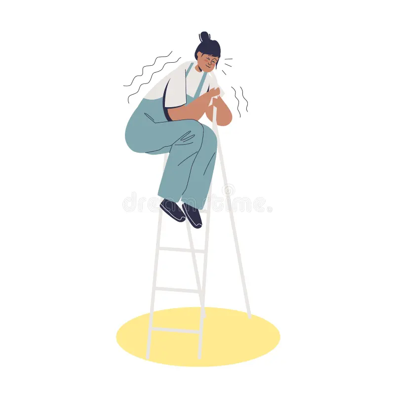
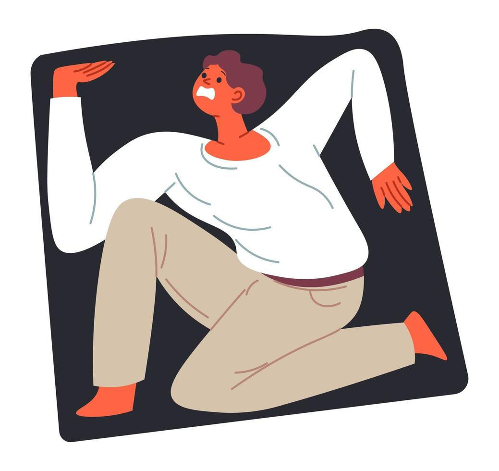
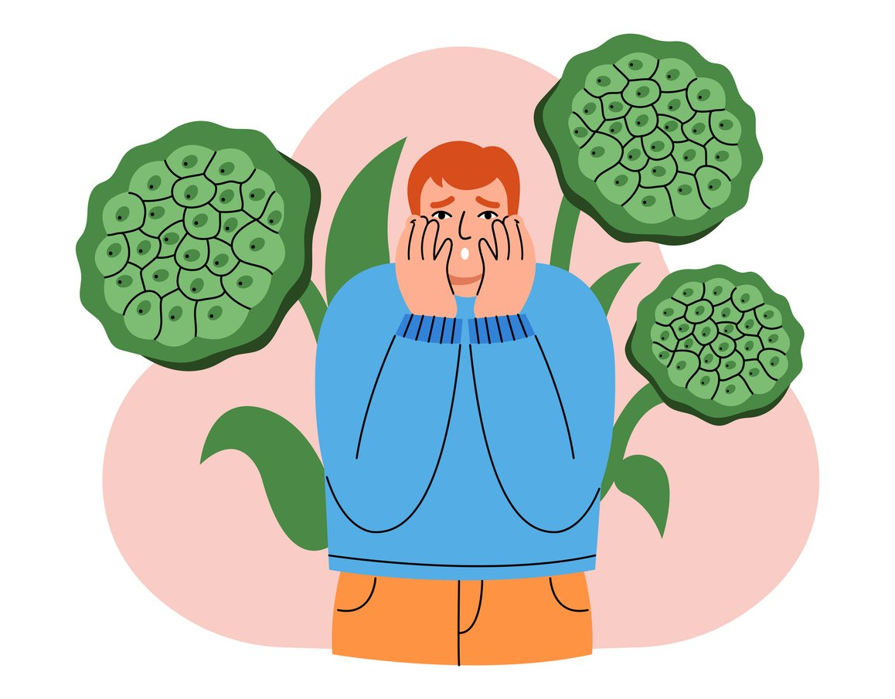

Fobias
As fobias se definem como um medo intenso e contínuo de situações, objetos, animais ou situações específicas, esse medo muitas vezes leva o evitamento e gera uma angústia expressiva na vida das pessoas.
Pessoas que apresentam fobias geralmente conhecem as causas dos seus medos e evitam ao máximo entrar em contato com o que temem, não apresentando sintomas expressivos no dia a dia. Porém, em alguns casos, o simples fato de pensar na origem da fobia já desencadeia uma série de manifestações adversas.
Apesar de variar de acordo com o tipo e o grau do transtorno, alguns sintomas são comuns à maioria das fobias e aparecem de forma repentina, principalmente quando ocorre um ataque de pânico.
Entre os sintomas físicos, podemos destacar:
- Tontura e vertigem
- Náusea
- Tremores
- Calafrios
- Formigamento pelo corpo
- Sudorese intensa
- Dor de cabeça
- Tensão muscular
- Diarreia
- Aumento da frequência cardíaca e palpitações
- Boca seca
- Dificuldade para respirar
Acrofobia
A acrofobia é caracterizada pelo medo irracional de altura e pode ser causada por diversos fatores, como instinto de sobrevivência exacerbado e experiências traumáticas. Uma pessoa que caiu de um lugar alto ou presenciou um acidente envolvendo queda livre, por exemplo, tem grandes chances de desenvolver esse tipo de fobia.
Os indivíduos que sofrem desse transtorno costumam apresentar sintomas físicos e emocionais intensos quando estão em locais altos, como vertigem, tremor e pânico. Nos quadros mais graves, o acrofóbico não consegue subir escadas, morar em prédios, entrar em elevadores ou dirigir sobre pontes.

pt.dreamstime.com
Aerofobia
Diferentemente do que muitos pensam, uma pessoa que sofre de acrofobia nem sempre terá medo de andar de avião. Por isso, há um nome específico para o medo irracional de voar, que é aerofobia. Geralmente, a pessoa que desenvolve esse transtorno de ansiedade se restringe ao uso de transportes terrestres ou marítimos.
A aerofobia pode limitar a vida do indivíduo tanto em questões de lazer quanto profissionais, pois muitos acrofóbicos deixam de viajar para outros países nas férias, de participar de congressos internacionais ou de ir a reuniões em filiais estrangeiras da empresa devido à ansiedade incontrolável que esta situação causa.

https://br.freepik.com/
Agorafobia
A palavra agorafobia é usada para designar o medo irracional de lugares abertos, fechados ou de multidões devido a pensamentos de que pode ser difícil escapar ou de que não terá ninguém por perto para receber auxílio caso apresente sintomas incapacitantes, como pânico ou crises agudas de ansiedade.
Normalmente, quem sofre desse transtorno fica muito dependente de outras pessoas, pois precisa ter uma companhia sempre por perto para ter a sensação de segurança. A falta de independência e de confiança em si mesmo pode trazer muito sofrimento emocional para o indivíduo com agorafobia.
O simples fato de sair de casa para ir ao supermercado ou à farmácia, por exemplo, pode se transformar em uma experiência terrível e ameaçadora.
Apesar de saberem que seus medos são irracionais, os agorafóbicos não conseguem deixar de pensar que estão em constante perigo.

https://br.freepik.com/
Aracnofobia
Uma das fobias mais comuns está relacionada à aranha, um aracnídeo de oito pernas que pode ou não ser venenoso para o ser humano. Apesar da aparência assustadora, muitas espécies são inofensivas e quase invisíveis a olho nu. Porém, isso não impede que várias pessoas sintam medo excessivo desse animal.
O condicionamento na infância é uma das principais causas da aracnofobia. Muitas crianças são ensinadas por seus pais ou responsáveis a temer ou a evitar o contato com aranhas por causa da possibilidade de serem picadas. Quando chegam à idade adulta, não conseguem controlar o medo e a ansiedade diante desse bicho, mesmo que não represente um perigo.

https://pt.123rf.com
Claustrofobia
Permanecer por muito tempo em um lugar fechado e pequeno é o maior temor dos claustrofóbicos. Esse transtorno muitas vezes é confundido com a agorafobia, mas apresenta características distintas de diagnóstico. Quem sofre desse transtorno sente medo do confinamento em ambientes fechados.
Entrar em elevadores, trens do metrô e aparelhos de ressonância magnética, por exemplo, pode paralisar ou causar pânico em indivíduos que desenvolvem essa fobia, dificultando suas relações sociais e atividades do cotidiano. Estima-se que a claustrofobia atinja cerca de 4% da população.

https://pt.vecteezy.com/
Coulrofobia
O medo irracional de palhaços é denominado coulrofobia e, na maioria dos casos, é desenvolvido devido a experiências traumáticas na infância. Embora sejam coloridas e alegres, essas criaturas mascaradas típicas do circo transformaram-se no pesadelo de muitas pessoas.
As expressões faciais desconhecidas e os gestos exagerados dos palhaços são alguns dos atributos que causam pânico em quem sofre desse transtorno de ansiedade. Além disso, muitos filmes e seriados de terror têm o palhaço como protagonista, o que pode ter contribuído para o aumento dessa fobia entre adolescentes e adultos.
Fobia social

https://br.freepik.com/
Fobia Social
O transtorno de ansiedade social, ou fobia social, é caracterizado por uma ansiedade ou medo irracional de situações sociais corriqueiras. A pessoa teme ser rejeitada, humilhada ou avaliada negativamente pelos demais, por isso esquiva-se de falar em público, de conhecer novas pessoas, de ir a festas, de comer na frente dos outros, de conversar com figuras de autoridade ou até mesmo de sair de casa.
Com frequência, esse tipo de transtorno se desenvolve na infância ou início da adolescência, podendo permanecer até a vida adulta se não for tratado. A fobia social causa diversos prejuízos na vida de um indivíduo, pois afeta suas relações sociais, profissionais e amorosas, podendo evoluir para outros problemas de saúde mental, como depressão e abuso de drogas.

pt.vecteezy.com
Glossofobia
Apesar de ser um grande desafio, muitas pessoas conseguem vencer a ansiedade de apresentar trabalhos ou fazer apresentações na frente de uma plateia. Mas, quando essa situação é paralisante e causa um medo persistente, é um alerta para o diagnóstico de transtorno mental.
Glossofobia é o termo usado para designar o medo irracional de falar em público. Um estudo publicado no International Journal of Research indica que aproximadamente 75% das pessoas sofrem dessa fobia. Esse transtorno traz diversas complicações para a vida social do indivíduo, já que essas situações ocorrem com frequência na escola e no ambiente de trabalho.

https://br.freepik.com/
Hematofobia
Hematofobia, ou hemofobia, é o nome dado à patologia psicológica apresentada por pessoas que têm medo exagerado e irracional de ver sangue. Os sintomas mais comuns são desmaio, enjoo, tontura, calafrio e falta de ar. Porém, esses sintomas podem variar de pessoa a pessoa dependendo do grau do transtorno.
Alguns hematofóbicos também podem desenvolver medo de objetos cortantes e perfurantes, como facas e agulhas, que podem estar associados ao sangramento. Por isso, muitas vezes deixam de fazer exames médicos que necessitam da retirada de sangue e uso desses instrumentos médicos. Como qualquer distúrbio exagerado, a pessoa precisa ser tratada para que não afete sua qualidade de vida.

depositphotos.com
Ofidiofobia
O medo irracional de cobras ou serpentes é chamado de ofidiofobia. Assim como a aracnofobia, esse é um dos transtornos de ansiedade mais comuns envolvendo animais. As pessoas que desenvolvem essa patologia começam a passar mal e a apresentar sintomas de pânico ao se depararem com esse tipo de réptil.
Em casos mais graves, somente a menção ou a visualização de uma imagem de cobra pode levar a pessoa a uma intensa reação de pavor, calafrios e, em alguns casos, problemas cardíacos.
Um dos motivos que tornam essa fobia uma das mais prevalentes na população geral é o fato de que algumas espécies de cobras são peçonhentas, ou seja, injetam seus venenos nas vítimas, sendo, muitas vezes, mortais. Mesmo sem nunca ter tido contato direto com esses animais, as pessoas podem desenvolver esse tipo de transtorno de ansiedade.
Para alguns neurocientistas, o medo de cobras é uma herança ancestral, pois esses animais representavam uma grande ameaça à sobrevivência, principalmente para os povos primitivos. Ao longo da evolução, as pessoas começaram a detectar os répteis que conseguiam se camuflar facilmente entre o mato e as árvores, reconhecendo o perigo.

https://br.freepik.com/
Tripofobia
Apesar de parecer inusitado, a aversão a padrões irregulares ou a agrupamentos de pequenos buracos ou saliências atinge cerca de 15% da população. Segundo uma pesquisa realizada na Universidade Emory, nos Estados Unidos, a tripofobia está mais relacionada à emoção de nojo do que de medo.
Os dados da pesquisa mostram que a reação das pessoas frente a um conjunto de furos ou buracos está relacionada a um mecanismo visual primitivo presente em todos os seres humanos. Ao contrário da resposta de luta ou fuga própria do medo, os voluntários do estudo tiveram uma resposta que retardou a ação, emitindo um alerta de cautela.

catracalivre.com.br